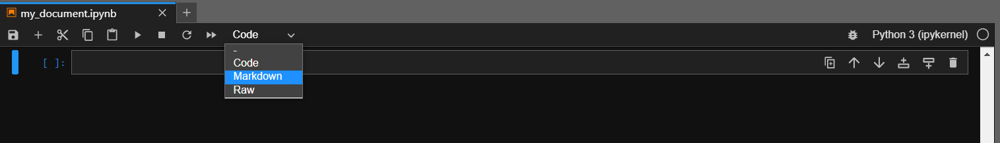
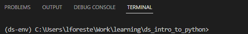
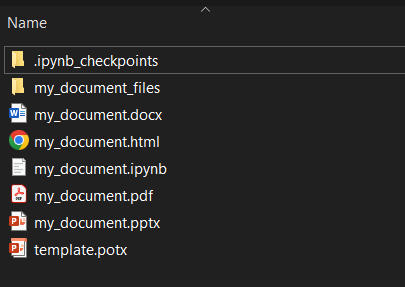

A key component to any good data analysis is writing the final report that describes the analysis and results. This report may be:
Documenting the work for future reference
For collaborators to understand the anaylsis that was done
For executive members of the team to provide actionable insights
Writing a report often requires many tedious steps:
Creating plots and tables for analysis
Saving plots and tables for the report
Finding plots and tables and inserting into the report
Tweaking the formatting in your word document to fix page breaks
Tweaking the formatting in your word document to fix awkward images
Tweaking the formatting in your word document to fit lengthy tables
Tweaking…
Remembering to actually provide insights based on the analysis
Redoing the entire thing because someone decided they would prefer a powerpoint to a document
While we cannot remove all of these steps, we can continue to move in the direction of reproducibility by utilizing literate programming. This is the methodology that combines a programming language (R, Python) with a documentation language (Word, Powerpoint, html, PDF) such that the entire report is actually produced alongside the code that is being run. This way, if an error is disocvered, or if some additional subjects are added to the data, you can just re-compile the report and get the new or corrected results immediately (versus having to reconstruct figures, paste them into Word, and many other ‘by-hand’ pieces of work that carry extra places to introduce error). By including the report itself as a step in our code journey, the entire project becomes reproducible, which is the best end goal one can ask for!
We are already halfway there by using a Jupyter notebook! In this section, we will first go over the fundamentals of adding text and context to a Jupyter notebook file so that others using it can follow along the code with descriptions and see inline results all in one place. Second, we will introduce the program Quarto, which will let us transform a Jupyter notebook into different report types. In fact, this entire course was produced using the Quarto program!
10.1 Markdown
At this point, we are well versed in writing code cells inside Jupyter Lab to analyze our data. We can annotate the code with # comments, display in-line figures, and save our outputs. However, we might want to add extra descriptions to the notebook to highlight what type of data analysis we did, what the insights are, and any other details that just cannot be covered eloquently in the code block itself.
To do this, we utilize markdown blocks within the notebook. Markdown is a system for writing web pages by ‘marking-up’ the text instead of writing complicated html code. The marked-up text gets converted to html to display what we actually wish to see. We can use markdown blocks interspersed within our code blocks to create a story, outline the code steps, and provide detailed documentation directly to our code. To create a markdown block inside a notebook, we have two options:
Click anywhere inside a current cell, press Code from the top to get a dropdown menu, and choose Markdown.
Click to the left of a cell to highlight it, and press M.

Convert code cell to markdown.
This will create a basic markdown cell. Let’s go over some basics now for what we can write in markdown.
Basic Formats
First, we can create a bulleted list by writing out a list with hyphens or asterisks. Some font formats include:
* **bold with double-asterisks*** *italics with single asterisks** `code-type font with backticks`
When rendered in a markdown cell (i.e. after we ‘run’ the cell, just like we would a code cell), this will show up as:
bold with double-asterisks
italics with single asterisks
code-type font with backticks
We can also make a numbered list instead of bullets by using numbers. The fun part is the numbers don’t actually matter, and it will automatically make sure that the numbering is consistent!
1. My first item2. My second item2. I forget which item7. Are we done yet?
Which will display as:
My first item
My second item
I forget which item
Are we done yet?
Creating Sections
A major component of most reports will be sections. We can create sections in Markdown cells using #:
Markdown Syntax
Output
# Header 1
Header 1
## Header 2
Header 2
### Header 3
Header 3
#### Header 4
Header 4
##### Header 5
Header 5
###### Header 6
Header 6
Useful Extras
Some useful extra markdown pieces include:
Create a hyperlink like this: [text to show](https://xkcd.com/1051)
Within a Jupyter notebook, create a markdown cell that has the following:
A title
A subsection
A table with 3 columns
A list with at least 3 bullets and 2 sub-bullets
Something of significance highlighted bold
Solution to Challenge 1
Feel free to use any of the above pieces of information regarding markdown to complete this challenge. Ultimately there is no wrong answer!
# Otters are the best animal
## A thesis on otters being cute
We all know this is true, so this is going to be a very short section, but to sum up, **otters** are the best.
| Animal | Rank | Cute Factor |
| ------ | ---- | ----------- |
| Otter | 1 | 1000 |
| Polar Bear | 2 | 42 - higher if a cub |
| Tarantula | 99 | -1 |
* Otters come in two different kinds:
* River
* Sea
* Otters are extremely smart
* Otters like to play
* Who doesn't want an otter
Would display as:
Otters are the best animal
A thesis on otters being cute
We all know this is true, so this is going to be a very short section, but to sum up, otters are the best.
Animal
Rank
Cute Factor
Otter
1
1000
Polar Bear
2
42 - higher if a cub
Tarantula
99
-1
Otters come in two different kinds:
River
Sea
Otters are extremely smart
Otters like to play
Who doesn’t want an otter
10.2 Quarto
Now that we have the basics of markdown down, we can move on to producing formats that we typically wish to see for ‘end products’. As a government worker, this often includes a word document, PDF, or a powerpoint, but html files are becoming more popular as well (especially in an age of easily accessible interactive visuals). We won’t dive deeply into this topic, but will cover the basics of converting our .ipynb format to .html, .pptx, .docx, and .pdf.
A note about outputs…
It can be easy to get caught up with how your document looks. It is highly recommended to render first as an html document and avoiding compiling to PDF, Word or Powerpoint until you really need to. This means that you can spend time working on generating content, and not trying to get figures to line up correctly and wrestling with LaTex libraries. The report can be one long stream, so tall figures that wouldn’t ordinary fit on one page can be kept full size and easier to read, since the reader can simply keep scrolling. Formatting is simple and easy to modify, allowing you to spend more time on your analyses instead of writing the report. Only at the very end should we focus on other documentation types!
Installation
To do this, we will utilize the program Quarto. Quarto is an open-source scientific and technical publishing system that allows us to publish high-quality articles, reports, presentations and more in a variety of formats. To begin, we must install quarto, which can be found here.
Software Center?
Note that this program is not yet available in the software center! Unfortunately, this might mean you cannot download it to your computer if you do not have admin access. If you do have admin rights, it is available at the website linked above. If you are unsure about whether or not it is safe to install, please discuss with your supervisor first before installing.
Hopefully, this section will have enough self-contained examples that if you cannot yet access quarto, following along will be sufficient!
Once Quarto is installed, we need one more tiny installation, specifically to allow us to create PDFs. Quarto utilizes LaTeX behind the scenes to typeset a PDF. To install a minimal version of LaTeX, we can use this command from a command prompt (open a new terminal in VS Code if necessary):
Command Prompt
> quarto install tool tinytex
Initating
This gives us everything we need to start using Quarto. Let’s create a sample Jupyter notebook that we will convert to our various formats. I have created a new folder inside ds_intro_to_python called introduction_to_quarto. Let’s open up an instance of Jupyter Lab here, and create a notebook named my_document.ipynb.
When formatting a notebook for Quarto, the first cell of the notebook is crucially important as it contains the chunk of instructions telling Quarto how to present the notebook for each format we wish to produce. This cell is put inside a Raw cell type (just like switching to markdown, we can change a cell type to Raw as well). We include basic information here such as the title of the document, author and date produced, as well as global options for the formats that we wish to create. These global options will apply to the entire document, and include things such as font size, tables of contents, how to display code, and so on. Let’s do that now, indicating a variety of options for four different formats: html, pdf, pptx, and docx:
It is written using yaml style, with option names written on the left, followed by a colon : and the option.
When multiple conditions are applied to a single option, they are written line by line, indented by two spaces.
We see that here with the format option. This option is where we tell Quarto what types of formats we wish to produce, and for each format, how we wish to produce it. In this case, we have our four formats, each with different sub-options. For html, we indicated that we wish for toc to be true. In this context, that means we wish to include a table of contents with the final output - this is populated with our markdown headers and sections. Next, for the pdf format, we specified that upon execution of a code cell, we should not echo the code into the report (i.e: hide all the code, but display the outputs of the code). After this, we included the option reference-doc for pptx. In this case, it means that we have a template file from wish we wish to base our powerpoint on - it is located in the same folder with the name template.potx. You may either add your own template file to the folder, or change the pptx option to match that of the final format docx. In this last case, we have simply specified to use all of Quarto’s default options for a word document to see what it will produce.
All of these are fairly simplified examples of formatting options that Quarto provides. For more detailed explanations, examples, and tutorials, check out the incredible guides Quarto has to offer!
Simple Example
Let’s now populate our notebook with some Markdown and code cells. You may copy and paste each of these blocks of code into your own notebook, changing your cells to markdown where necessary.
## First SectionWe can write some documentation for our document in the **markdown** portion of a notebook.
# next include some code!import numpy as npimport matplotlib.pyplot as plt
# we can break up the code over multiple cellsx = np.random.normal(size=1000) # list of 1000 random values between (0,1)# create a plotplt.hist(x)plt.show()
## Second Section### With SubsectionEach of these sections will show up in the table of contents.
This next section of code has special comments at the beginning of the code, starting with #|. This indicates that we are passing additional quarto arguments to this cell only (unlike the global format options we chose above). In this case, we are creating a plot and giving it a caption.
All Code Block Execution Options
Here’s a list of all the standard execution options we can pass to a codeblock using #|:
Option
Description
eval
Evaluate the code chunk (if false, just echos the code into the output).
echo
Include the source code in output.
output
Include the results of executing the code in the output (true, false, or asis to indicate that the output is raw markdown and should not have any of Quarto’s standard enclosing markdown).
warning
Include warnings in the output.
error
Include errors in the output (note that this implies that errors executing code will not halt processing of the document).
include
Catch all for preventing any output (code or results) from being included (e.g. include: false suppresses all output from the code block).
#| label: fig-polar#| fig-cap: "A line plot on a polar axis"# give a caption to our plotr = np.arange(0, 2, 0.01)theta =2*np.pi*rx = r*np.cos(theta)y = r*np.sin(theta)plt.plot(x, y)plt.show()
## Third Section:::: {.columns}::: {.column width="40%"}We can have multiple columns in our documents(Which might look weird in the markdown, but works out in the documents!)We can also hide our code, as shown below. There is an output, but the code to produce it is hidden!:::::: {.column width="60%"}- As well as - Lists- and lists- and lists!:::::::
#| echo: false# when we set echo to false, we won't see the code that is run. fig = plt.figure(figsize=(8,8))ax = fig.add_subplot(1,1,1, aspect=1)ax.scatter([.5],[.5], c='#FFCC00', s=120000, label="face")ax.scatter([.35, .65], [.63, .63], c='k', s=1000, label="eyes")X = np.linspace(.3, .7, 100)Y =2* (X-.5)**2+0.30ax.plot(X, Y, c='k', linewidth=8, label="smile")ax.set_xlim(0,1)ax.set_ylim(0,1)ax.spines['top'].set_visible(False)ax.spines['right'].set_visible(False)ax.spines['left'].set_visible(False)ax.spines['bottom'].set_visible(False)ax.set_xticks([])ax.set_yticks([])plt.show()
Okay great, we now have a simple Jupyter notebook with a few markdown cells, a few regular code cells, and some code outputs. Now let’s create our documents!
This is often easiest by opening a new terminal inside VS Code from which we can interact with Quarto. Make sure that when you open the terminal, you are either in the directory containing your notebook file, or can navigate to it!
Advanced Tip: Directory Navigation from a Terminal
We’ve tried to steer clear of requiring the command line too much in this course, but sometimes it is unavoidable! Here are the basic commands you might need to move between folders on the command line.
The directory you are currently in should be displayed to the left of the > in the terminal:

Current directory.
You can navigate to other directories using the cd command. cd .. will take you to the folder one level higher up, while cd directory_name will take you to a folder within your current folder. Full paths can be given as well: cd C:\path\to\directory.
To check the contents of the current folder, simply type dir (or ls for Macs or the powershell prompt), and a list of all objects in the current folder will be displayed. I find this useful to help me during my cd navigations!
Using these two commands, we can navigate from any folder to the one we wish to be in. In this case, we should be looking for a folder like ds_intro_to_python/introduction_to_quarto. Once in this folder, using dir should show us the file my_notebook.ipynb.
Once the terminal is set to the correct directory, we have two options. If we wish to produce a specific format instead of all the ones we listed in our initial cell, we can use the command:
Command Prompt
> quarto render my_document.ipynb --to html
Which will produce only the html output with given options. If we wish to let quarto produce all formats all at once, the command is even simpler:
Command Prompt
> quarto render my_document.ipynb
Let’s run this command and see what we get!

Quarto Output.
In this folder, we now have all of our new formats! Quarto has also created a new folder with the name my_document_files: this holds all the source files required to produce the html file.
Notice how the options were applied individually to each format. HTML has a table of contents, the PDF displays no code but all of the outputs, the powerpoint utilized the template we supplied, and the word document uses the defaults! While we have only scratched the surface of what Quarto has to offer, we already see that is a powerful tool that we can use to produce fully reproducible reports, inline documentation, and so much more.
Challenge 2
Challenge 2
Using the penguins dataset we have discussed throughout the course, create a short html report that highlights:
Which penguin is the heaviest
Which penguins live where
At least one other interesting fact about penguins
Solution to Challenge 2
My notebook might look something like this, after which I could use quarto render penguins_notebook.ipynb to produce an html report: